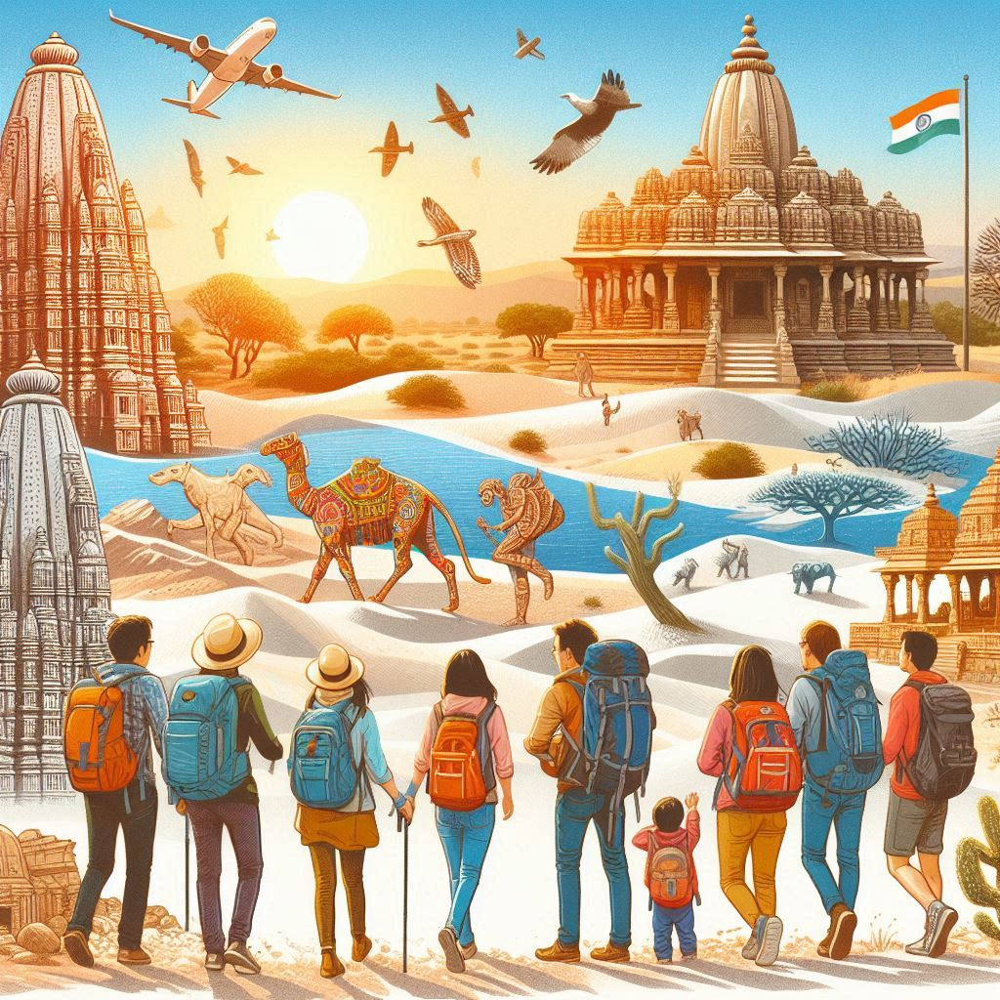
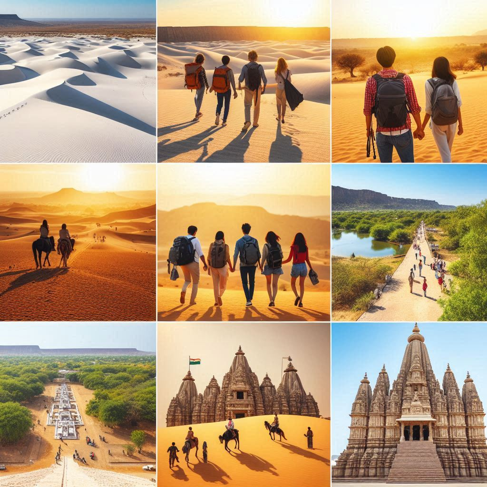

Gujarat is a state rich in history, culture, and natural beauty, making it a popular destination for tourism. From ancient temples and heritage sites to wildlife sanctuaries and vibrant festivals, Gujarat offers a diverse array of experiences for travelers. Here’s an overview of tourism in Gujarat:
1. Heritage and Historical Tourism
- Rani ki Vav (Queen’s Stepwell): This UNESCO World Heritage Site in Patan is a magnificent example of ancient stepwell architecture and intricate carvings.
- Laxmi Vilas Palace: Located in Vadodara, this grand palace is four times the size of Buckingham Palace and showcases Indo-Saracenic architecture.
- Champaner-Pavagadh Archaeological Park: Another UNESCO World Heritage Site, it features a blend of Hindu and Islamic architecture dating back to the medieval period.
- Sabarmati Ashram: Situated in Ahmedabad, this was the home of Mahatma Gandhi and served as a base for India’s freedom movement. It provides insights into Gandhi’s life and teachings.
2. Cultural and Religious Tourism
- Somnath Temple: One of the 12 Jyotirlingas of Lord Shiva, this ancient temple on the Saurashtra coast attracts millions of pilgrims every year.
- Dwarkadhish Temple: Located in Dwarka, it is considered one of the Char Dham pilgrimage sites and is dedicated to Lord Krishna.
- Shatrunjaya Hills (Palitana): A major pilgrimage site for Jainism, it has around 900 intricately carved marble temples atop a hill.
- Sun Temple at Modhera: Built in the 11th century, this temple is dedicated to the Sun God and is known for its exquisite carvings and architecture.
3. Wildlife and Nature Tourism
- Gir National Park: The only natural habitat of the Asiatic Lion, this national park is a major attraction for wildlife enthusiasts.
- Rann of Kutch: This vast white salt desert hosts the Rann Utsav, a festival featuring traditional music, dance, handicrafts, and cultural performances. The Great Rann of Kutch offers breathtaking views, especially during the full moon.
- Wildlife Sanctuaries: Marine National Park near Jamnagar, Blackbuck National Park at Velavadar, and Nal Sarovar Bird Sanctuary are popular spots for nature lovers.
4. Coastal and Beach Tourism
- Diu: Though administratively part of the Union Territory of Daman and Diu, it is closely associated with Gujarat tourism. Diu is known for its beaches, Portuguese heritage, and forts.
- Mandvi Beach: This beach in the Kutch region is famous for its serene beauty and the historic Vijay Vilas Palace.
- Tithal Beach: Located in the Valsad district, it is known for its black sand and vibrant beachside activities.
5. Festivals and Cultural Events
- Navratri Festival: Gujarat is renowned for celebrating Navratri with grand Garba and Dandiya Raas dances. This nine-day festival draws tourists from all over the world to experience the vibrant colors, music, and dance.
- Kite Festival (Uttarayan): Held in January, the skies of Gujarat fill with colorful kites, creating a mesmerizing view and lively atmosphere.
- Rann Utsav: This cultural festival in the Rann of Kutch offers a blend of crafts, music, dance, and traditional food against the backdrop of the white salt desert.


6. Adventure and Eco-Tourism
- Saputara Hill Station: Gujarat’s only hill station, it offers trekking, paragliding, and a pleasant climate, making it a perfect retreat for nature lovers.
- Hiking and Trekking: The Girnar Hills and Dangs region offer trails for trekking enthusiasts.
- Marine Activities: Scuba diving, snorkeling, and boat rides are available at places like Dwarka and Bet Dwarka.
7. Handicrafts and Shopping
- Bandhani (Tie-Dye): Gujarat is famous for its colorful tie-dye fabrics. Cities like Jamnagar and Bhuj are known for their Bandhani sarees.
- Patola Silk Sarees: The town of Patan is known for producing exquisite Patola sarees using double ikat weaving.
- Traditional Handicrafts: Tourists can explore Kutchi embroidery, beadwork, wooden carvings, pottery, and more.
8. Culinary Tourism
- Street Food: Gujarat is famous for its vegetarian cuisine, including dishes like Dhokla, Khandvi, Thepla, Undhiyu, Fafda-Jalebi, and more.
- Traditional Sweet Dishes: Desserts such as Mohanthal, Shrikhand, and Basundi are favorites among locals and tourists.
9. Industrial and Business Tourism
- Gujarat’s thriving industrial sectors, such as textiles, petrochemicals, and pharmaceuticals, have made it a hub for business tourism and trade shows, such as the Vibrant Gujarat Summit.
Conclusion
From historical monuments and religious sites to colorful festivals and serene beaches, Gujarat offers diverse and enriching travel experiences. The state’s mix of tradition, modernity, and hospitality makes it a must-visit destination for both domestic and international tourists.